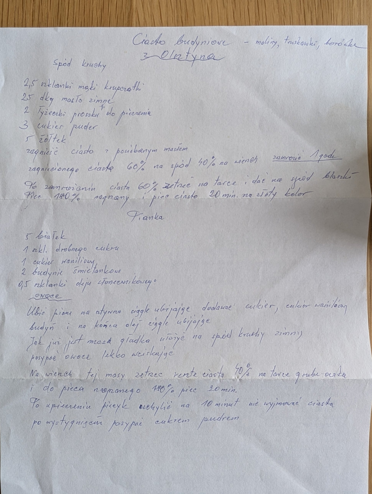

Ciasto budyniowe

Składniki
- Spód: 2,5 szklanki mąki krupczatki
- 25 dkg zimnego masła
- 2 łyżeczki proszku do pieczenia
- 3 (łyżki?) cukru pudru
- 5 żółtek
- Pianka: 5 białek
- 1 szkl. drobnego cukru
- 1 cukier waniliowy
- 2 budynie śmietankowe
- 0,5 szklanki oleju słonecznikowego
- owoce – maliny, truskawki, borówki
Przygotowanie
- Zagnieść ciasto z posiekanym masłem, podzielić: 60% na spód, 40% na wierzch; zamrozić 1 godz.
- Po zamrożeniu 60% ciasta zetrzeć na tarce na spód blaszki.
- Piec w nagrzanym piekarniku 180° ok. 20 min na złoty kolor.
- Ubić pianę na sztywno, ciągle ubijając dodawać cukier, cukier waniliowy, budyń, a na końcu olej.
- Gładką masę wyłożyć na zimny kruchy spód, posypać owocami, lekko wciskając.
- Na wierzch zetrzeć resztę ciasta (40%) na tarce o grubych oczkach.
- Piec w nagrzanym piekarniku 180° 30 min.
- Po upieczeniu wyłączyć piekarnik i nie wyjmować ciasta przez 10 minut.
- Po wystygnięciu posypać cukrem pudrem.
Oryginalny zapis
Ciasto budyniowe – maliny, truskawki, borówki
z Olatyna
Spód kruchy
2,5 szklanki mąki krupczatki
25 dkg masło zimne
2 łyżeczki proszku do pieczenia
3 cukier puder
5 żółtek
zagnieść ciasto z posiekanym masłem
zagniecionego ciasta 60% na spód 40% na wierzch zamrozić 1 godz.
Po zamrożeniu ciasta 60% zetrzeć na tarce i dać na spód blaszki –
Piec 180° nagrzany i piec ciasto 20 min. na złoty kolor
Pianka
5 białek
1 szkl. drobnego cukru
1 cukier waniliowy
2 budynie śmietankowe
0,5 szklanki oleju słonecznikowego
owoce
Ubić pianę na sztywno ciągle ubijając dodawać cukier, cukier waniliowy
budyń i na końca olej ciągle ubijając
Jak już jest masa gładka ułożyć na spód kruchy zimny
posypać owoce lekko wciskając
Na wierzch tej masy zetrzeć resztę ciasta 40% na tarce grube oczka
i do pieca nagrzanego 180° piec 30 min.
Po upieczeniu piecyk wyłączyć na 10 minut nie wyjmować ciasta
po wystygnięciu posypać cukrem pudrem